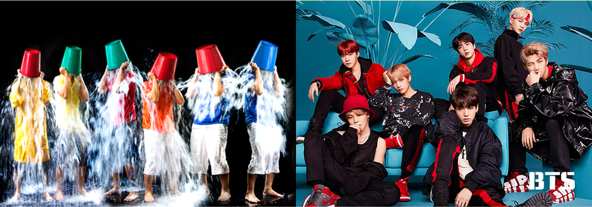
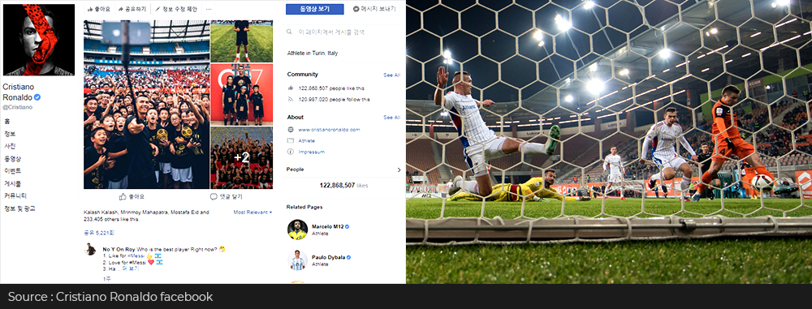
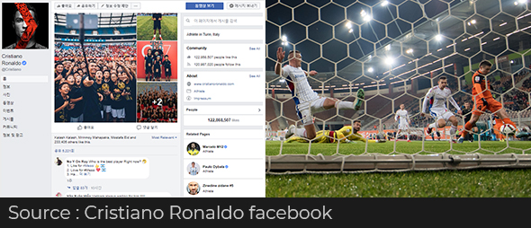

와 제 롤모델이 잡스에요!!! 아이폰 첫 출시되고 나서부터 계속 아이폰 쓰고 있는데 잡스가 너무 그리워요ㅠㅠ 지금은 돈만 벌려고 하는 것 같아서 디자인 발전도 없고ㅠㅠ와 제 롤모델이 잡스에요!!! 아이폰 첫 출시되고 나서부터 계속 아이폰 쓰고 있는데 잡스가 너무 그리워요ㅠㅠ 지금은 돈만 벌려고 하는 것 같아서 디자인 발전도 없고ㅠㅠ와 제 롤모델이 잡스에요!!! 아이폰 첫 출시되고 나서부터 계속 아이폰 쓰고 있는데 잡스가 너무 그리워요ㅠㅠ 지금은 돈만 벌려고 하는 것 같아서 디자인 발전도 없고ㅠㅠ와 제 롤모델이 잡스에요!!! 아이폰 첫 출시되고 나서부터 계속 아이폰 쓰고 있는데 잡스가 너무 그리워요ㅠㅠ 지금은 돈만 벌려고 하는 것 같아서 디자인 발전도 없고ㅠㅠ와 제 롤모델이 잡스에요!!! 아이폰 첫 출시되고 나서부터 계속 아이폰 쓰고 있는데 잡스가 너무 그리워요ㅠㅠ 지금은 돈만 벌려고 하는 것 같아서 디자인 발전도 없고ㅠㅠ
Cultural Odyssey
How is Social Media Evolving in 2018?
By Tim Alper(Journalist)
Do you remember the Ice Bucket Challenge? Back in 2014, it was all the rage. However, thanks largely to charity advocate and Nineties pop star Sean (of vocal duo Jinusean), the challenge is back.
This summer, a whole slew of Korean entertainers (including Billboard chart-topping boyband BTS) are responding to Sean’s requests to particpate – taking it in turn to dump freezing-cold water all over themselves, and then taking to social media to publically challenge celebrity pals.
The challenge involves more than buckets of cold water, however – participants can forfeit if they instead make a donation to a recognized amyotrophic lateral sclerosis-related (ALS) charity.
International fans are also getting in on the act – with a Chinese BTS fanclub sending a US$8,900 million donation to a Korean ALS clinic in their favorite members’ names.
Social Media Sports
Meanwhile, in Europe, in the wake of the World Cup, the biggest stars of La Liga, the EPL and the Bundesliga are taking well-deserved holidays.
Their exploits in Russia came after intensive, 10 month-long league seasons, so most have now jetted off with their families to enjoy some downtime. This year, however, most players seem to be spending much of their summer holidays either uploading vacation snaps to their social media accounts or commenting on each others’ Instagram posts.
Fans of the past used to buy newspapers to find out which players were likely to move to another club during the summer transfer window. But social media is now allowing transfer speculation to become interactive. Groups of fans study Twitter carefully. If a star player from another club retweets or likes a post from your favorite club – or starts to follow your team’s star striker – the transfer rumor mill will start turning fast!
 Wider Reach
There is now a social media platform for whatever you are into.
Fashion fans and foodies love image-rich apps like Instagram – and many top stylists and cooks now get inspiration from here. If you like humor, Imgur is probably your thing, with user-uploaded memes and gifs that community members can up- or down-vote. Cryptocurrency investors are fans of the anonymity provided by Telegram, whose encrypted channels allow users to speak frankly in privacy. And people who like to live in the present have become massive fans of Snapchat and Sobrr. These two apps let users post content that is automatically deleted after 24 hours – so you do not have to live in fear of videos and comments you posted weeks (or years) ago coming back to haunt you.
Social media in 2018 is not all fun and games, however. Indeed, they are now allowing social movements and political campaigns to go truly global.
Whatever your feelings are about Donald Trump, nobody can deny that he is America’s first Twitter president. He takes to social media to announce many of his policy decisions, to make frank public declarations to other world leaders and address his critics. With millions of supporters and detractors eagerly awaiting every post, he has quite probably changed the way politicians use the internet forever.
The #MeToo and #WithYou movements, too, are propelling social change around the world in a manner that was entirely inconceivable even a few years ago. Not just celebrities but also ordinary people have been able to share their stories – and quite possibly help change the course of human history using their social media accounts.
Nobody knows what will come next for Facebook, Twitter and the like. But the first half of 2018 has already been a rollercoaster – so expect plenty more from social media in the second half of this exciting year!


By Tim Alper(Journalist)
Tim Alper is a British journalist who has lived in Seoul for 11 years. He has contributed to publications such as The Guardian, The Jewish Chronicle, Joongang Ilbo, Weekly Chosun and Korean Air’s Morning Calm. He is also the author of the book Bananas & Couscous and the co-author of Have Fork, Will Travel.
-
Great
322
-
Like
322
-
Sad
322
-
So-so
322
-
Angry
322